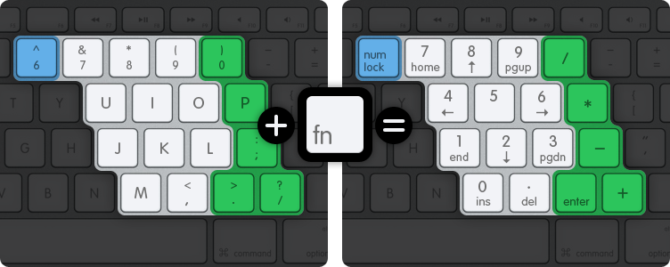

| Action | Shortcut |
|---|---|
| Click the right mouse button | Ctrl ⌃+click |
| Click the left and right mouse buttons at once | Ctrl ⌃+Opt ⌥+click or three-finger tap on trackpad |
| Lock/unlock the mouse from the window | Cmd ⌘+click |
| Send a function key to the game | Fn+F1–F12 |
| Toggle the numeric keypad | Cmd+U or hold Fn |
| Switch to/from full screen mode | Cmd ⌘+F |
| Pause the game | Cmd ⌘+P |
| Fast-forward the game | Hold Cmd ⌘+Opt ⌥+⇢ |
| Take a screenshot | Cmd ⌘+Shift ⇧+S |
| Choose a different launch option | Hold Opt ⌥ while the game is starting up |
If the game needs you to press a key on the numeric keypad, but your Mac’s keyboard doesn’t have one, then you can hold down Fn to make part of the keyboard act as a numpad:

The 7-8-9 numpad keys match up to the same numbers on the regular keyboard: you can use this to orient your fingers to the simulated numpad.
If you don’t want to keep Fn held down to access the numpad, you can also turn the numpad behaviour on or off with the menu option. This will take effect until you toggle the option again.
Mac keyboards adopt the F1–F12 keys as hotkeys to control volume, screen brightness and other system functions. To send those keys to the game instead, hold down fn when you press the function key.
You can toggle this behaviour by turning on “Use all F1, F2 etc. keys as standard function keys” in OS X’s Keyboard Preferences.
Some OS X system hotkeys (like Ctrl ⌃+⇠/⇢ to switch Spaces) may overlap with the game’s control scheme and get in the way when playing.
To avoid such problems, the game will try to disable any conflicting hotkeys while you’re playing. To do this, it needs some extra accessibility permissions:
DOS games were designed for PC keyboards, and may use special keys (such as Scroll Lock or Num Lock) that aren’t present on your Mac’s keyboard.
If the game needs you to press a key that’s not on your Mac’s keyboard, you can send it from the menu instead.